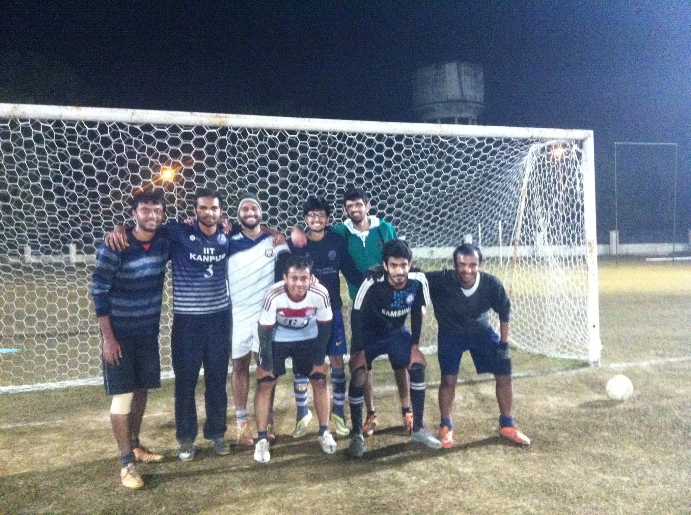
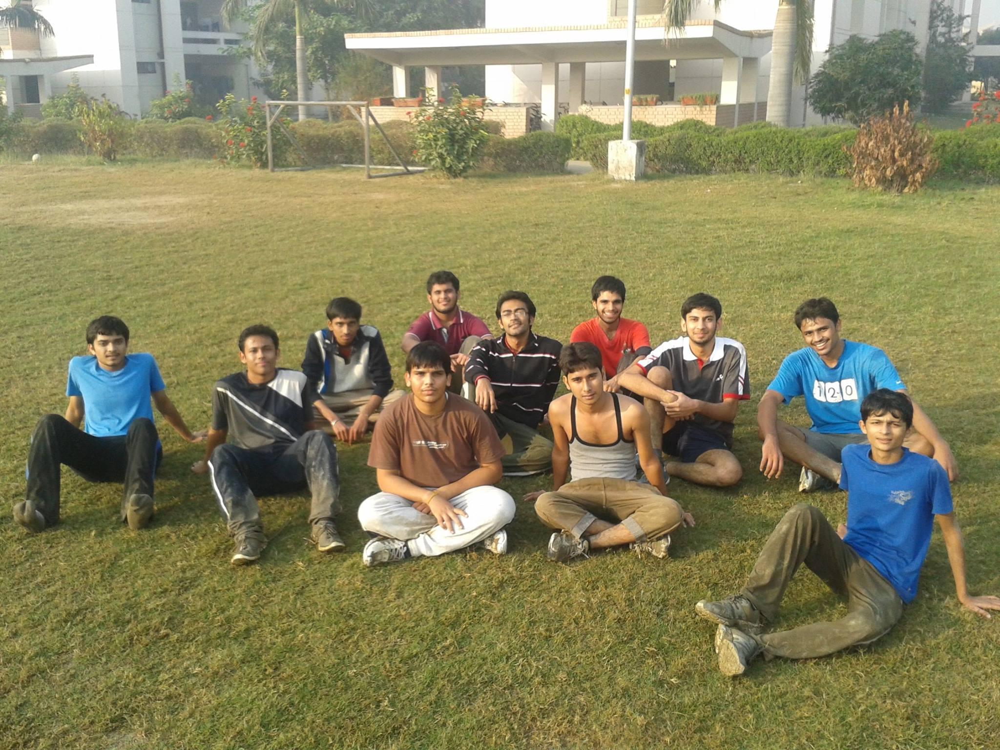
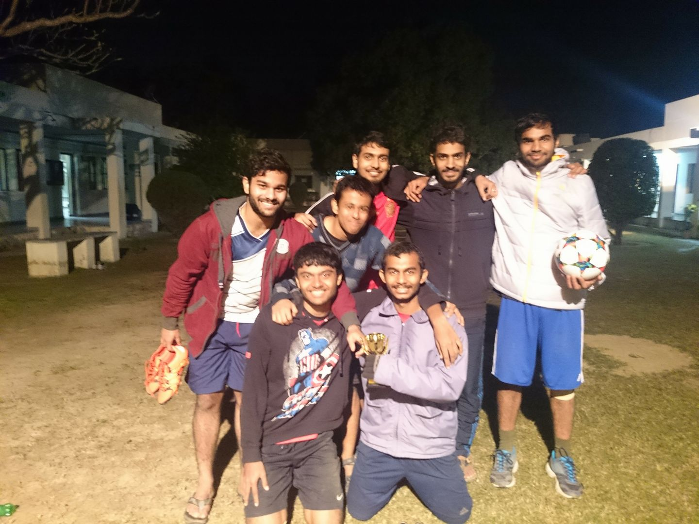
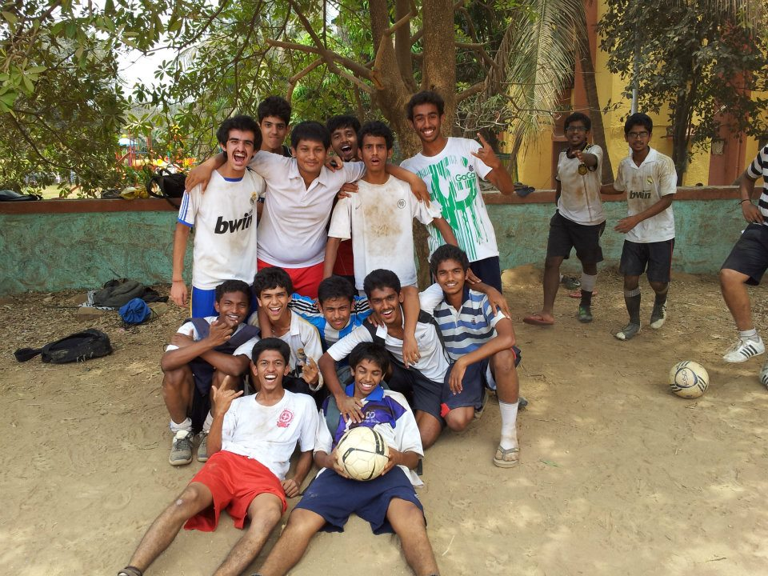

LaTeX: 30 min tutorial, templates, wikibook
wiby.me: Old websites search engine
Project Gutenberg: Public domain free ebooks
Students against depression: Helpful website for taking care of mental health
Lichess: Trying out chess!
Zotero: Free software for organizing research readings. It also has a Firefox/Chrome addons for adding articles from web.
My primary passtime is playing and watching football. Here are some football related websites that I like:
Below are some pics during a time where I ate, slept and played football. The sport has given me many fond memories and good friends!
   